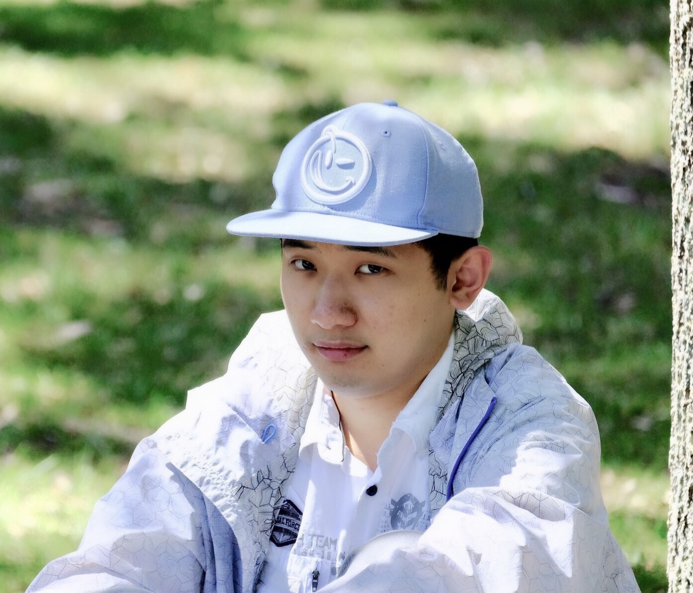
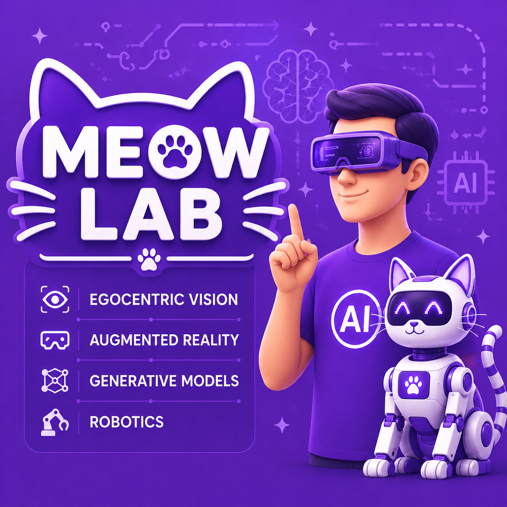
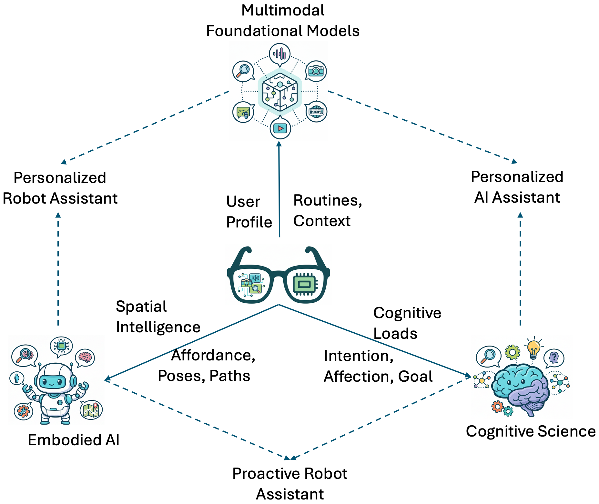

2026
NeurIPS ED
IPIBench: Evaluating Interactive Proactive Intelligence of MLLMs under Continuous Streams
Conference on Neural Information Processing Systems (NeurIPS) 2026 · ED Track.

Tsinghua University College of Artificial Intelligence
Assistant Professor
Ex-Research Scientist at Meta GenAI

This image of Jaime Lannister charging alone at Daenerys and her dragon reveals what it often takes to do science—you must be willing to stand as the lonely warrior.
Miao Liu · 刘淼

I’m an Assistant Professor at Tsinghua University’s College of Artificial Intelligence, where I lead the MEOW (Modeling Egocentric Omni World) Lab.
Designing human-centered AI that sees through your eyes, learns your skills, and understands your intentions.构建能“看你所见、学你所会、懂你所想”的下一代人本智能系统。
I received my Ph.D. in Robotics from Georgia Tech, advised by Prof. James Rehg, and work closely with Prof. Yin Li at the University of Wisconsin–Madison. I was fortunate to collaborate with Prof. Siyu Tang and Prof. Michael Black during visits to ETH Zurich and the Max Planck Institute.
Previously, I was a Research Scientist at Meta GenAI, focusing on egocentric vision and generative AI. During my internship at Facebook Reality Labs, I worked with Dr. Chao Li, Dr. Lingni Ma, Dr. Kiran Somasundaram, and Prof. Kristen Grauman on egocentric action recognition and localization.
I have been honored with Best Paper nominations at CVPR 2022 and ECCV 2024, and the BMVC 2022 Best Student Paper Award. As a primary contributor, I helped build Ego4D, Ego-Exo4D, EGTEA Gaze+, and BEHAVIOR Vision Suite. I also designed models intended for deployment in next-generation smart glasses developed by Meta Reality Labs. At Meta GenAI, I contributed to training and evaluating large-scale generative multimodal models, including Emu and the multimodal components of Llama 3 and Llama 4.
Our research north star
We connect human-centric perception, multimodal foundation models, embodied intelligence, and cognitive science to build AI that understands people, adapts to individuals, and proactively assists in daily life.
Understanding people through first-person perception of their actions, attention, and interactions with the world.
Enabling robots to understand, learn from, and assist people in dynamic, human-centered environments.
Building foundation models that remember user history, model individual preferences, and provide personalized assistance.
Developing agents that reason about intentions, beliefs, and cognitive states to anticipate human needs.

盼诸君助我！
My group is always looking for talented students interested in human-centered AI.
From the lab
Since joining Tsinghua · August 2025 onwards. Scroll for earlier updates.
Research in print
BROWSE BY TOPIC
Papers can appear in more than one topic. Combine a topic with a year or keyword.
Conference on Neural Information Processing Systems (NeurIPS) 2026 · ED Track.
Conference on Empirical Methods in Natural Language Processing (EMNLP) 2026. ( Oral )
Conference on Empirical Methods in Natural Language Processing (EMNLP) 2026. *: Equal Contribution
The European Conference on Computer Vision (ECCV) 2026.
The European Conference on Computer Vision (ECCV) 2026.
The International Conference on Machine Learning (ICML) 2026. †: Co-corresponding Author
Annual Meeting of the Association for Computational Linguistics (ACL) 2026. ( Oral , acceptance rate 3.3%)
IEEE/CVF Conference on Computer Vision and Pattern Recognition (CVPR) 2026.
Conference on Neural Information Processing Systems (NeurIPS) 2025. †: Co-corresponding Author
IEEE/CVF Conference on Computer Vision and Pattern Recognition (CVPR) 2025. †: Co-corresponding Author
IEEE/CVF Conference on Computer Vision and Pattern Recognition (CVPR) 2025. ( Highlight )
European Conference on Computer Vision (ECCV) 2024. ( Oral , Best Paper Award Candidate 15/8585 )
European Conference on Computer Vision (ECCV) 2024. †: Co-corresponding Author
IEEE/CVF Conference on Computer Vision and Pattern Recognition (CVPR) 2024 ( Spotlight ) *: Equal Contribution
IEEE/CVF Conference on Computer Vision and Pattern Recognition (CVPR) 2024 ( Oral )
International Journal of Computer Vision (IJCV), 2024; first published online in 2023. †: Student Mentor
British Machine Vision Conference (BMVC) 2022. †: Student Mentor, Co-corresponding Author ( Spotlight , Best Student Paper Prize )
IEEE/CVF Conference on Computer Vision and Pattern Recognition (CVPR) 2022 ( Oral , best paper finalist, 33/8161 ) Key driver for Social Benchmark and Forecasting Benchmark
No publications match these filters. Try another topic, year, or keyword—or reset all filters.
The people behind the research
In the classroom
Course 80940012 · Tsinghua University
Let’s connect
For research collaborations and prospective student inquiries, please reach out by email.
College of Artificial Intelligence
Tsinghua University · Beijing, China